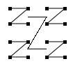
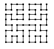

Die Menüs
Datei-Menü
Hier besitzen Sie die Möglichkeit, eine Datei zu laden, die Darstellung als Bild zu exportieren oder das
Programm zu beenden.
- Datei laden: Die Datei muss eine Textdatei sein, welche entweder Daten über die Autorenbeziehungen
oder die aggregierten Kollaborationswerte einzelner Autoren enthält.
- Exportieren: Sie exportieren die gesamte Visualisierungsfläche in der aktuellen Zoomstufe.
Wählen Sie den Dateinamen und das Format (PNG ist zu empfehlen).
Glyphen-Menü
In diesem Menü ändern Sie die Anordnung der Glyphen. Zu Wahl stehen folgende Layouts:
- Zeile für Zeile: Die Glyphen werden Zeile für Zeile angeordnet, sodass insgesamt Zeilen
und Spalten möglichst gleich groß sind.
- Morton Z-Kurve: Diese Darstellung soll einer besseren Mustererkennung in den Daten dienen.
Die Pixel werden dabei rekursiv in einer Z-Form positioniert, wie in der Darstellung zu sehen.

- Alternative Z-Kurve: Die Z-Kurve arbeitet am besten auf einem Datensatz, dessen Anzahl einer Viererpotenz entspricht. Diese Alternative ist flexibler, indem die Flächen wenn nötig nicht exakt geviertelt werden.
- Tabelle: Entspricht einer Zeile-fürZeile-Darstellung, wobei die Zeilen und Spalten bzw. die Glyphen selbst beschriftet werden.
- Sortierte Tabelle: Entspricht der Tabelle, jedoch mit einer Sortierung anhand absteigender Gesamtkollaboration. Die Autorentabelle wird zusätzlich nach der Ähnlichkeit der Kollaborationsverläufe
sortiert.
- MDS Layout: Diese Darstellung dient der Anordnung der Glyphen anhand ihrer Ähnlichkeiten. Ähnliche
Glyphen werden näher zusammen gelegt als sehr unterschiedliche. Dadurch entsteht ein Clustering der Ikonen. Zu beachten: Kollaborationsbeziehungen, welche komplett bei 0 liegen, werden nicht angeordnet. Im Falle der Beziehungstabelle wird zudem nur eine Hälfte der Glyphen verwendet, da die andere ohnehin ihr Spiegelbild darstellt. Das MDS Layout ist teilweise zufallsabhängig, weshalb mhrmaliges Auswählen zu
unterschiedlichen Anordnungen führt. Beachten Sie zudem, dass die Laufzeit bei einem großen Datensatz
schnell ansteigt.
- Gitteranordnung: Prinzipiell ist dieses Layout mit der MDS zu vergleichen. Um jedoch Überlappungen
zu vermeiden und den Platz optimal zu nutzen, werden die Glyphen auf einem fiktiven Gitter angeordnet.
Dieses Layout ist daher meist übersichtlicher. Ansonsten gelten die Hinweise des MDS Layouts.
Pixel-Menü
In diesem Menü bestimmen Sie die Anordnung der Pixel innerhalb der Glyphen.
- Zeile-für-Zeile: Die Pixel werden in chronologischer Reihenfolge in Zeilen angeordnet. Wählen
Sie diesen Menüpunkt, so erscheint ein kurzer Dialog, in dem Sie die Breite der Zeilen selbst bestimmen
können. Geben Sie nichts ein und drücken sofort OK, werden die Zeilen so breit gewählt, dass eine
möglichst quadratische Anordnung entsteht.
- Spalte-für-Spalte: Wie oben, jedoch werden keine Zeilen untereinander sondern Spalten von links nach rechts angeordnet.
- Morton Z-Kurve: Analog zur Anordnung der Glyphen als Morton Z-Kurve.
- Alternative Z-Kurve: Analog zur Anordnung der Glyphen als alternative Z-Kurve.
- Hilbert-Kurve: Die Idee ist ähnlich derjenigen bei der Z-Kurve, jedoch folgt die Hilbert-Kurve einem komplexeren Muster.
